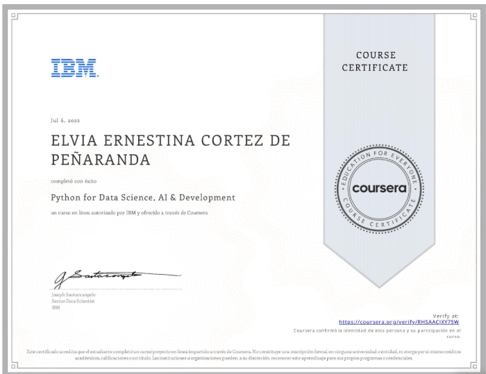

En el ecosistema actual de la Inteligencia Artificial, Python se posiciona no solo como un lenguaje de programación, sino como el motor fundamental de desarrollo para la resolución de problemas complejos. Su versatilidad permite integrar desde el procesamiento de datos crudos hasta la implementación de modelos predictivos avanzados y redes neuronales. Utilizando Pandas, NumPy, SciPy, para procesar datasets listos para el análisis, desarrollando algoritmos de aprendizaje supervisado y no supervisado y con mucha facilidad para integrar APIs y bases de datos
Fundamentos de Python
Visualizar los cuadernos Jupyter Notebook

Certificado
Qué aprendí:
- Desarrollé una comprensión fundamental de la programación en Python aprendiendo sintaxis básica, tipos de datos, expresiones, variables y operaciones con cadenas.
- Aplicar la lógica de programación de Python utilizando estructuras de datos, condiciones y ramificaciones, bucles, funciones, manejo de excepciones, objetos y clases.
- Demostrar competencia en el uso de bibliotecas de Python como Pandas y Numpy y en el desarrollo de código mediante Notebooks de Jupyter.
- Acceder y extraer datos basados en web trabajando con API REST mediante solicitudes y realizando web scraping con BeautifulSoup.